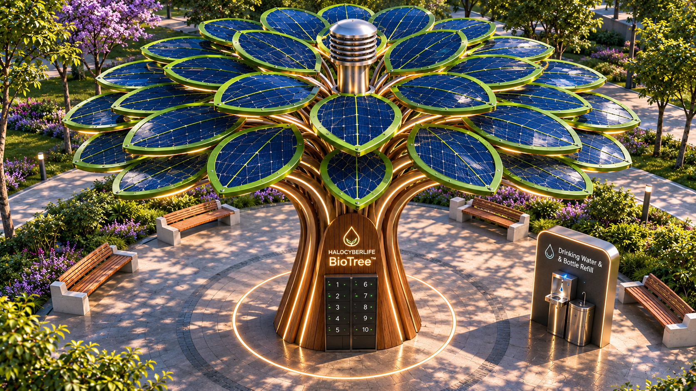
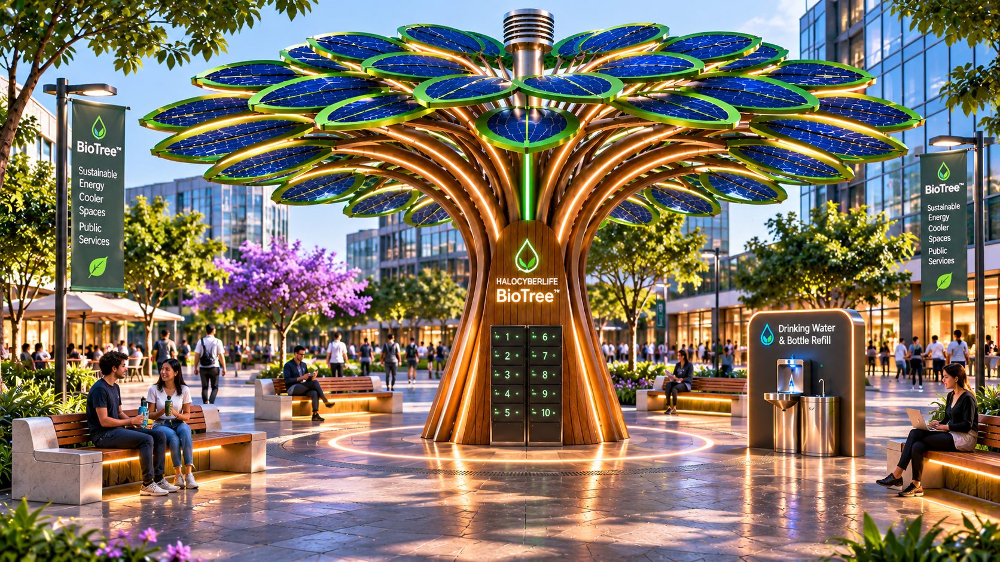

Renewable Generation
Nature-inspired photovoltaic leaves designed to explore solar energy collection and architectural shading.
HaloCyberLife™ · Original Innovation
One Tree. Multiple Systems. Endless Possibilities.
BioTree explores a new generation of public infrastructure where nature-inspired architecture, renewable energy, thermal energy storage, environmental comfort and everyday community services come together within a single structure.
Active Design & Engineering DevelopmentArchitectural visualization in preparation. Explore the proposed systems using the discovery controls.
System Discovery
Explore the relationship between renewable energy, thermal storage, architecture, environmental systems and public services.
Preliminary design parameters. Final dimensions and configurations remain subject to engineering validation.
Purpose Beyond Architecture
BioTree investigates how a single architectural installation could address multiple environmental and community needs while making better use of shared public spaces.
Nature-inspired photovoltaic leaves designed to explore solar energy collection and architectural shading.
An integrated above-ground tank investigates sand-based thermal energy storage, supported by proposed insulation, monitoring and protective systems.
Architectural shade, air circulation and controlled mist cooling explore improved outdoor comfort.
Selected configurations investigate water collection, treatment and independent public drinking-water and bottle-refill services.
Integrated personal-device charging lockers explore convenient access to electrical services in shared environments.
Multiple BioTree installations could potentially participate in coordinated energy management and distributed community infrastructure.

Architectural Identity
BioTree's proposed architectural language combines organic geometry, warm walnut-effect finishes, bronze-toned structural elements, deep-blue photovoltaic surfaces and forest-green leaf frames.
Its ground-flush installation, integrated seating and serviceable components are intended to create a welcoming environment without sacrificing engineering functionality.
Integrated Energy Storage
BioTree investigates the integration of a large sand-based thermal storage tank within its above-ground architectural structure.
Thermal insulation, structural support, temperature monitoring and system separation are essential engineering considerations.
Thermal energy storage retains energy as heat. It is different from electrical battery storage. Recovering electricity from stored heat would require appropriate energy conversion equipment.
Human-Centered Design
BioTree explores how public infrastructure could become an inviting destination for relaxation, social interaction and access to everyday amenities.
Integrated seating, architectural shade, air circulation and controlled mist cooling investigate ways to improve outdoor environmental comfort.
Ten proposed integrated charging compartments for personal electronic devices, with appropriate electrical protection and service accessibility to be evaluated.
Proposed drinking and bottle-refill facilities, subject to water-quality validation and regulatory approval.
Beyond Daylight
Proposed integrated lighting transforms BioTree into a welcoming architectural landmark. Nighttime services depend on the final energy supply design.
One Concept. Many Possibilities.
Adaptable configurations could respond to different climates, environments, community needs and infrastructure requirements.

Renewable energy, shade and everyday amenities within pedestrian environments.
Welcoming gathering spaces that combine landscape architecture and technology.
Outdoor study environments, charging facilities and environmental education.
Explore coordinated renewable energy management across multiple installations.
Adaptable Infrastructure
BioTree investigates modular configurations that could respond to different budgets, climates, energy requirements and community needs. Selected systems could be omitted or introduced independently, subject to engineering feasibility.
A simplified concept focused on photovoltaic shading, seating and architectural integration.
A proposed configuration incorporating selected charging, cooling, lighting and water-access services.
A more comprehensive research configuration exploring thermal storage, renewable energy management and interconnected infrastructure.
BioTree is an original HaloCyberLife research and development initiative. Structural capacity, thermal storage performance, electrical safety, water quality and operational feasibility remain subject to engineering validation.
Proposed engineering considerations include:
Concept visualizations do not represent certified, commercially ready or operational installations. Public visualizations are intended to communicate the architectural vision and proposed system relationships.
The HaloCyberLife Vision
Inspired by nature. Developed through engineering. Designed for humanity.
Explore. Interact. Discover. Imagine.